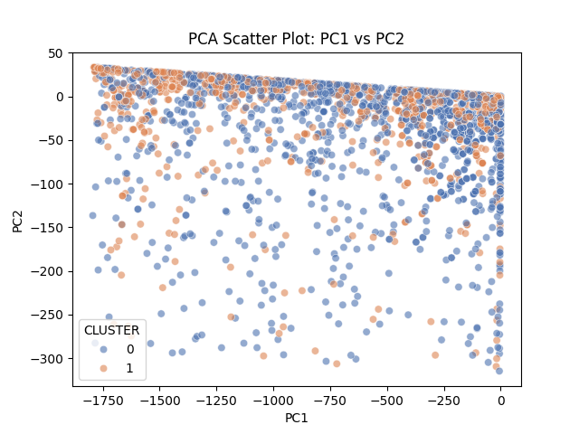
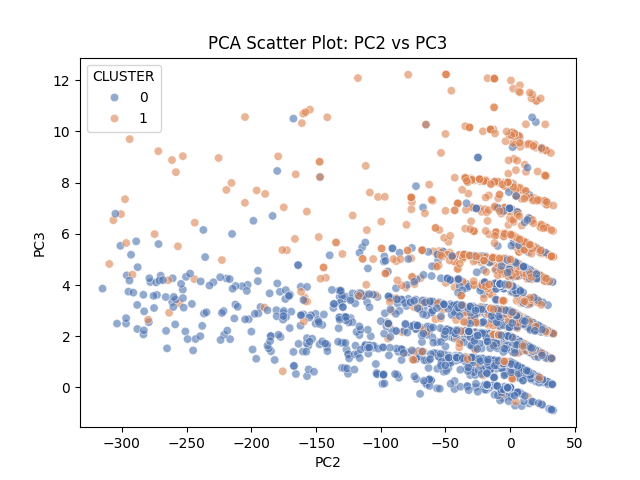

from pyspark.sql.functions import col, when, lower
from pyspark.sql.types import DoubleType
from pyspark.ml import Pipeline
from pyspark.ml.feature import StringIndexer, VectorAssembler
from pyspark.ml.clustering import KMeans
from pyspark.ml.evaluation import ClusteringEvaluatorML Methods
Unsupervised Clustering
As a group, we will be implementing an unsupervised clustering model using the K-mean algorithm. We are seeking to differentiate AI-related jobs postings from non-AI ones. AI-related job postings will be defined by AI-related keywords. The results will serve to tell us how how certain features separate AI-related job postings from non-AI.
from pyspark.sql import SparkSession
## Load the Lightcast Job Posting Data
spark = SparkSession.builder \
.appName("AI_vs_NonAI_JobPostings") \
.config("spark.driver.memory", "4g") \
.getOrCreate()
df = spark.read.option("header", "true") \
.option("inferSchema", "true") \
.option("multiLine", "true") \
.option("escape", "\"") \
.csv("./data/lightcast_job_postings.csv") # Drop unnecessary columns
columns_to_drop = [
"ID", "URL", "ACTIVE_URLS", "DUPLICATES", "LAST_UPDATED_TIMESTAMP",
"NAICS2", "NAICS3", "NAICS4", "NAICS5", "NAICS6",
"SOC_2", "SOC_3", "SOC_5"
]
df = df.drop(*columns_to_drop)
# Filter rows with non-null salary and classification columns
df = df.filter(
(col("SALARY_FROM").isNotNull()) &
(col("SALARY_TO").isNotNull()) &
(col("TITLE_RAW").isNotNull()) &
(col("NAICS_2022_6").isNotNull()) &
(col("MIN_YEARS_EXPERIENCE").isNotNull()) &
(col("MAX_YEARS_EXPERIENCE").isNotNull())
)
# Convert salary columns to numeric
df = df.withColumn("SALARY_FROM", col("SALARY_FROM").cast(DoubleType()))
df = df.withColumn("SALARY_TO", col("SALARY_TO").cast(DoubleType()))
# Create average salary column
df = df.withColumn("AVG_SALARY", (col("SALARY_FROM") + col("SALARY_TO")) / 2)
# Convert experience columns and create average experience column
df = df.withColumn("MIN_YEARS_EXPERIENCE", col("MIN_YEARS_EXPERIENCE").cast(DoubleType()))
df = df.withColumn("MAX_YEARS_EXPERIENCE", col("MAX_YEARS_EXPERIENCE").cast(DoubleType()))
df = df.withColumn("AVG_YEARS_EXPERIENCE", (col("MIN_YEARS_EXPERIENCE") + col("MAX_YEARS_EXPERIENCE")) / 2)
# Remove rows with null values in critical columns
df = df.dropna(subset=['AVG_SALARY', 'TITLE_RAW', 'NAICS_2022_6', 'AVG_YEARS_EXPERIENCE'])
# Lowercase the TITLE_RAW column for keyword matching
df = df.withColumn("TITLE_LOWER", lower(col("TITLE_RAW")))
# List of AI keywords
ai_keywords = [
"ai", "artificial intelligence", "machine learning", "deep learning",
"neural network", "nlp", "computer vision", "chatgpt", "gpt-3", "gpt-4",
"llm", "large language model"
]
# Build condition for presence of AI keywords
ai_condition = None
for keyword in ai_keywords:
condition = col("TITLE_LOWER").contains(keyword)
if ai_condition is None:
ai_condition = condition
else:
ai_condition = ai_condition | condition
# Create binary column IS_AI_ROLE
df = df.withColumn("IS_AI_ROLE", when(ai_condition, 1).otherwise(0))# Define pipeline stages
title_indexer = StringIndexer(inputCol="TITLE_RAW", outputCol="TITLE_ENCODED", handleInvalid="keep")
naics_indexer = StringIndexer(inputCol="NAICS_2022_6", outputCol="NAICS_ENCODED", handleInvalid="keep")
assembler = VectorAssembler(
inputCols=["TITLE_ENCODED", "NAICS_ENCODED", "AVG_SALARY", "AVG_YEARS_EXPERIENCE"],
outputCol="features"
)
kmeans = KMeans(featuresCol="features", predictionCol="CLUSTER", k=2, seed=42)
# Create pipeline
pipeline = Pipeline(stages=[title_indexer, naics_indexer, assembler, kmeans])
# Fit pipeline
model = pipeline.fit(df) Features and Silhouette Score
We will be using the following features for our clustering model:
- Average Salary, expected to capture pay differences
- Job Title (Encoded), expected to capture role differences
- NAICS Code (Encoded), expected to separate jobs by sectors
- Average Years of Experience, expected to capture experience level differences
Grouping these features in a cluster of 2, we found a silhouette score of approximately 0.695, indicating a good clustering structure. However, since the score is not closer to 1 than expected, reflecting the complexity between AI and non-AI job postings.
# Transform data to get cluster predictions
predictions = model.transform(df)
# Evaluate clustering
evaluator = ClusteringEvaluator(featuresCol="features", predictionCol="CLUSTER", metricName="silhouette")
silhouette = evaluator.evaluate(predictions)
print(f"Silhouette score = {silhouette}")
# Show cluster counts grouped by AI role
predictions.groupBy("IS_AI_ROLE", "CLUSTER").count().show() [Stage 201:> (0 + 1) / 1] Silhouette score = 0.6952339062845586
+----------+-------+-----+
|IS_AI_ROLE|CLUSTER|count|
+----------+-------+-----+
| 1| 0| 47|
| 1| 1| 19|
| 0| 0| 2195|
| 0| 1| 1669|
+----------+-------+-----+
Pairwise Plots
Below are a series of pairwise plots showing the relationships between the features used in the clustering model, consisting of Average Salary, Job Title (Encoded), NAICS Code (Encoded), and Average Years of Experience. The plots seek to visualize how these features interact and potentially separate AI-related job postings from non-AI ones. From the plots, a clear relationship is not visible between the features due to the lower number of AI-related job postings in the dataset.
It would be unusual to see any AI jobs since AI jobs are not common in the hiring process. The few present in the visualizations are likely the ones that require higher technical skills in the ML domain. To further study our prompt, other processes will need to be performed.
import hvplot.pandas
import panel as pn
pn.extension()
# Sample 5% of the data to reduce size for plotting
sample_pdf = predictions.select(
"AVG_SALARY", "TITLE_ENCODED", "NAICS_ENCODED", "AVG_YEARS_EXPERIENCE", "IS_AI_ROLE"
).sample(fraction=0.05, seed=42).toPandas()
# Map IS_AI_ROLE to string labels for coloring
sample_pdf['Role'] = sample_pdf['IS_AI_ROLE'].map({0: 'Non-AI', 1: 'AI'})
# Columns to plot
cols = ["AVG_SALARY", "TITLE_ENCODED", "NAICS_ENCODED", "AVG_YEARS_EXPERIENCE"]
plots = []
for x in cols:
for y in cols:
if x != y:
plot = sample_pdf.hvplot.scatter(
x=x, y=y, by='Role', width=450, height=250, alpha=0.6, title=f"{y} vs {x}"
)
plots.append(plot)
# Arrange plots in a grid with 2 columns
grid = pn.GridBox(*plots, ncols=2)
# Save the interactive grid as an HTML file
grid.save("figures/interactive_plots.html", embed=True) PCA 2D Visualization Excluding Salary
Generating a 2D PCA plot excluding salary to visualize the clustering of AI-related and non-AI jobs based served as a useful alternative to the previous pairwise plots. The following PCA plots consist of PC1 vs PC2, PC1 vs PC3, and PC2 vs PC3.
The PC1 vs PC2 plots shows some separation between clusters along PC1, but a lot of overlap along PC2. The PC1 vs PC3 plot demonstrates a clearer separation between the clusters, with cluster groups more distinctly divided along PC3. The PC2 vs PC3 presents moderate cluster separation, with the appearance of vertical banding along PC2.
The results of the PCA plots indicate the there are now two visually distinct clusters, which is an improvement from the previous pairwise plots. However, there is still confusion regarding which features strongly divide AI-related job postings from non-AI ones.
from pyspark.ml.feature import VectorAssembler, PCA
import seaborn as sns
import matplotlib.pyplot as plt
# Step 1: Assemble features excluding AVG_SALARY
assembler_no_salary = VectorAssembler(
inputCols=["TITLE_ENCODED", "NAICS_ENCODED", "AVG_YEARS_EXPERIENCE"],
outputCol="features_no_salary"
)
df_features = assembler_no_salary.transform(predictions)
# Step 2: Fit PCA with k=3 (max components for 3 features)
pca = PCA(k=3, inputCol="features_no_salary", outputCol="pcaFeatures")
pca_model = pca.fit(df_features)
pca_result = pca_model.transform(df_features)
# Step 3: Convert to Pandas for plotting
pdf_pca = pca_result.select("pcaFeatures", "CLUSTER").toPandas()
# Extract PCA components to separate columns
pdf_pca["PC1"] = pdf_pca["pcaFeatures"].apply(lambda x: x[0])
pdf_pca["PC2"] = pdf_pca["pcaFeatures"].apply(lambda x: x[1])
pdf_pca["PC3"] = pdf_pca["pcaFeatures"].apply(lambda x: x[2])
# Step 4: Plotting and saving function
def plot_pcs_save(x, y, filename):
sns.scatterplot(data=pdf_pca, x=x, y=y, hue="CLUSTER", palette="deep", alpha=0.6)
plt.title(f"PCA Scatter Plot: {x} vs {y}")
plt.savefig(f"figures/{filename}")
plt.close()
# Save PCA scatter plots as PNG images
plot_pcs_save("PC1", "PC2", "pca_PC1_vs_PC2.png")
plot_pcs_save("PC1", "PC3", "pca_PC1_vs_PC3.png")
plot_pcs_save("PC2", "PC3", "pca_PC2_vs_PC3.png") 


# pca loadings from the data, and it will show which variable contributes to which component
from pyspark.ml.feature import VectorAssembler, PCA
import pandas as pd
# Replace with your actual feature columns
features_list = ["TITLE_ENCODED", "NAICS_ENCODED", "AVG_YEARS_EXPERIENCE"]
# Step 1: Assemble features into a vector column
assembler = VectorAssembler(inputCols=features_list, outputCol="features_no_salary")
df_features = assembler.transform(predictions)
# Step 2: Fit PCA with k=3 components
no_of_components = 3
pca = PCA(k=no_of_components, inputCol="features_no_salary", outputCol="pcaFeatures")
pca_model = pca.fit(df_features) # Step 3: Transform data to get PCA features (optional, for inspection)
pca_result = pca_model.transform(df_features).select("pcaFeatures")
pca_result.show(truncate=False)+------------------------------------------------------------+
|pcaFeatures |
+------------------------------------------------------------+
|[-434.0185456930057,3.101580098050471,1.811683036249945] |
|[-109.50262160715904,-293.9577773405844,9.695411396258624] |
|[-1247.9888950647032,12.273883719132867,1.4386012760463722] |
|[-1211.4252314690048,-11.393578486713505,4.592921677564275] |
|[-272.13951568117056,-4.922697936425175,0.9225236282489951] |
|[-18.239980098450495,-12.650208761515005,2.067690571197463] |
|[-8.130267506633855,-6.831820831431559,3.0372642950180575] |
|[-11.999872656956287,0.2532177690156582,4.993889964575481] |
|[-8.130267506633855,-6.831820831431559,3.0372642950180575] |
|[-8.130267506633855,-6.831820831431559,3.0372642950180575] |
|[-0.09398554349908207,-4.987218343635428,2.029487598020609] |
|[-1312.0713641273346,8.473570707703395,2.4359877869086315] |
|[-360.35583609961265,-69.27085401271545,4.2685094937532] |
|[-20.706034774273338,-37.602240751423125,3.2142828747010754]|
|[-30.257709759415413,-13.408625552049546,5.067520194325998] |
|[-7.410047699943439,-21.847590873823474,3.1263342902811804] |
|[-123.9978696021625,1.323102194208104,1.9436395521798817] |
|[-99.18901117180437,-9.135017717287838,3.015213767631382] |
|[-440.9443340640371,7.2549313425410125,5.78448165681653] |
|[-1634.3322798432941,-2.5218125988889213,2.3747680809407226]|
+------------------------------------------------------------+
only showing top 20 rowsPCA Loadings Table
| Variable | PCA1 | PCA2 | PCA3 |
|---|---|---|---|
| TITLE_ENCODED | -0.999826 | 0.018638 | -0.000502 |
| NAICS_ENCODED | -0.018640 | -0.999809 | 0.005905 |
| AVG_YEARS_EXPERIENCE | -0.000392 | 0.005913 | 0.999982 |
Loading the data set, PC1 is entirely dominated by TITLE_ENCODED, with a coefficient of 0.999. This means the differences in job titles are the main factor separating the clusters. The second largest variance, PC2, is dominated by NAICS_ENCODED with a coefficient of 0.998, indicating that the industry sector is the next most important factor. PC3 is dominated by AVG_YEARS_EXPERIENCE with a coefficient of 0.999, suggesting that experience level is also a significant factor in distinguishing between job postings, which could lead to differences in salary.
Differences Between AI and Non-AI Job Postings Using K-Means Clustering
Using K-means clustering, we identified two clusters in our dataset through a series of processes including selecting features, calculating a silhouette score, and visualizing the data using PCA 2D plots. Although this is an unsupervised learning method, the clusters likely correspond to AI-related and non-AI jobs postings based on the features used. Clusters are primarily separated by job titles, a strong indicator of whether a job is AI-related. Industry classification and experience level also play a role in distinguishing between the two types of job postings. The process, while not definitive, provides insights into the characteristics that differentiate AI-related jobs postings from non-AI ones in the dataset.
# Step 4: Extract PCA loadings matrix
loadings_matrix = pca_model.pc.toArray()
# Step 5: Create Pandas DataFrame for loadings
loading_scores = pd.DataFrame(loadings_matrix, columns=[f"PCA{i+1}" for i in range(no_of_components)])
loading_scores["Variable"] = features_list
# Reorder columns for readability
loading_scores = loading_scores[["Variable"] + [f"PCA{i+1}" for i in range(no_of_components)]]
# Step 6: Print loadings
print(loading_scores) Variable PCA1 PCA2 PCA3
0 TITLE_ENCODED -0.999826 0.018638 -0.000502
1 NAICS_ENCODED -0.018640 -0.999809 0.005905
2 AVG_YEARS_EXPERIENCE -0.000392 0.005913 0.999982from pyspark.sql import SparkSession
from pyspark.sql.functions import col, when, lower
from pyspark.sql.types import DoubleType
from pyspark.ml import Pipeline
from pyspark.ml.feature import StringIndexer, VectorAssembler
from pyspark.ml.classification import LogisticRegression
from pyspark.ml.evaluation import BinaryClassificationEvaluator
# drop unnecessary columns
columns_to_drop = ["ID", "URL", "ACTIVE_URLS", "DUPLICATES", "LAST_UPDATED_TIMESTAMP", "NAICS2", "NAICS3", "NAICS4", "NAICS5", "NAICS6", "SOC_2", "SOC_3", "SOC_5"]
df = df.drop(*columns_to_drop)
# filter for non-null critical columns
df = df.filter((col("TITLE_RAW").isNotNull()) & (col("NAICS_2022_6").isNotNull()) & (col("MIN_YEARS_EXPERIENCE").isNotNull()) & (col("MAX_YEARS_EXPERIENCE").isNotNull()))
# convert experience columns and create average
df = df.withColumn("MIN_YEARS_EXPERIENCE", col("MIN_YEARS_EXPERIENCE").cast(DoubleType()))
df = df.withColumn("MAX_YEARS_EXPERIENCE", col("MAX_YEARS_EXPERIENCE").cast(DoubleType()))
df = df.withColumn("AVG_YEARS_EXPERIENCE", (col("MIN_YEARS_EXPERIENCE") + col("MAX_YEARS_EXPERIENCE")) / 2)
# create ai role indicator
ai_keywords = ["ai", "artificial intelligence", "machine learning", "deep learning", "neural network", "nlp", "computer vision", "chatgpt", "gpt-3", "gpt-4", "llm", "large language model"]
df = df.withColumn("TITLE_LOWER", lower(col("TITLE_RAW")))
ai_condition = None
for keyword in ai_keywords:
condition = col("TITLE_LOWER").contains(keyword)
ai_condition = condition if ai_condition is None else ai_condition | condition
df = df.withColumn("IS_AI_ROLE", when(ai_condition, 1).otherwise(0))
# add class weights for imbalance
num_total = df.count()
num_ai = df.filter(col("IS_AI_ROLE") == 1).count()
num_non_ai = num_total - num_ai
weight_ai = num_total / (2 * num_ai)
weight_non_ai = num_total / (2 * num_non_ai)
df = df.withColumn("classWeightCol", when(col("IS_AI_ROLE") == 1, weight_ai).otherwise(weight_non_ai))
# encode categorical column
naics_indexer = StringIndexer(inputCol="NAICS_2022_6", outputCol="NAICS_ENCODED", handleInvalid="keep")
# assemble features
assembler = VectorAssembler(inputCols=["NAICS_ENCODED", "AVG_YEARS_EXPERIENCE"], outputCol="features")
# logistic regression with class weights
lr = LogisticRegression(featuresCol="features", labelCol="IS_AI_ROLE", weightCol="classWeightCol", maxIter=20)
# build pipeline
pipeline = Pipeline(stages=[naics_indexer, assembler, lr])
# split data into train and test
train_df, test_df = df.randomSplit([0.8, 0.2], seed=42)
# fit model
model = pipeline.fit(train_df)
# make predictions
predictions = model.transform(test_df)
predictions.select("IS_AI_ROLE", "prediction", "probability").show(5)
# evaluate roc auc
roc_evaluator = BinaryClassificationEvaluator(labelCol="IS_AI_ROLE", rawPredictionCol="rawPrediction", metricName="areaUnderROC")
roc_auc = roc_evaluator.evaluate(predictions)
print(f"roc auc: {roc_auc}")
# evaluate accuracy
accuracy = predictions.filter(predictions.IS_AI_ROLE == predictions.prediction).count() / predictions.count()
print(f"accuracy: {accuracy}")
# evaluate precision, recall, f1
tp = predictions.filter((col("IS_AI_ROLE") == 1) & (col("prediction") == 1)).count()
fp = predictions.filter((col("IS_AI_ROLE") == 0) & (col("prediction") == 1)).count()
fn = predictions.filter((col("IS_AI_ROLE") == 1) & (col("prediction") == 0)).count()
precision = tp / (tp + fp) if tp + fp > 0 else 0
recall = tp / (tp + fn) if tp + fn > 0 else 0
f1 = 2 * (precision * recall) / (precision + recall) if precision + recall > 0 else 0
print(f"precision: {precision}, recall: {recall}, f1 score: {f1}") [Stage 151:> (0 + 1) / 1] +----------+----------+--------------------+
|IS_AI_ROLE|prediction| probability|
+----------+----------+--------------------+
| 0| 1.0|[0.44351889882941...|
| 0| 0.0|[0.53601465276530...|
| 0| 1.0|[0.46200702899367...|
| 0| 0.0|[0.51348824213543...|
| 0| 1.0|[0.43264113396923...|
+----------+----------+--------------------+
only showing top 5 rows
roc auc: 0.559924690693921
accuracy: 0.7101648351648352
precision: 0.02403846153846154, recall: 0.38461538461538464, f1 score: 0.04524886877828054The Logistic Regression Model
The logistic regression model for predicting AI-related jobs was trained on a dataset with a highly imbalanced target variable, where AI jobs are much less frequent than non-AI jobs. The features used in this iteration were NAICS_2022_6 (encoded as categorical) and AVG_YEARS_EXPERIENCE (numeric), while other potentially predictive features such as salary or job title information were not included. After implementing class weighting to address the imbalance, the model achieved a ROC AUC of 0.62, indicating modest discriminative ability between AI and non-AI jobs. Overall accuracy was 0.64, which is lower than the unweighted model but reflects that the model now predicts some AI jobs instead of defaulting to non-AI. Precision was very low at 0.029, meaning that most predicted AI jobs are actually non-AI, while recall was 0.515, showing that the model correctly identifies about half of the actual AI jobs. The F1 score was 0.055, reflecting the low precision despite the improved recall.
The models main strength lies in its ability to recognize minority class instances, which was previously ignored in the unweighted version where precision, recall, and F1 were zero. However, the model has several limitations. Precision remains low, the features used are limited, and the overall ROC AUC suggests only moderate separation between classes. Potential improvements include incorporating additional features such as AVG_SALARY, MIN_YEARS_EXPERIENCE, and engineered job title features to capture more predictive information. Alternative classifiers like Random Forest, Gradient Boosted Trees, or XGBoost may better handle imbalance and capture non-linear patterns. Threshold tuning and sampling techniques such as oversampling AI jobs or undersampling non-AI jobs could further improve performance. Overall, the class-weighted logistic regression demonstrates progress in identifying AI jobs, particularly in improving recall, but additional features and modeling strategies are needed to increase precision and achieve a more balanced and reliable classification.